molte applicazioni usano UDP
- DNS
- usa il protocollo UDP poiché necessita di uno scambio rapido delle informazioni
- può anche usare TCP per messaggi lunghi ma con meno frequenza
- SMNP
- protocollo di rete che consente di gestire e monitorare i dispositivi di una rete
- HTTP/3
- usa QUIC di google, una forma specifica di UDP
Struttura di UDP
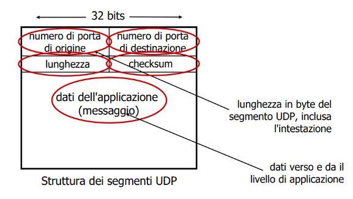
- intestazione a 4 campi ognuno da 2 byte:
- numeri di porta definiscono con quale processo comunicare
- lunghezza specifica quanti byte ha il segmento UDP
- checksum permette al ricevente di controllare eventuali errori(spieghiamo dopo come) il messaggio non può essere spezzettato in più messaggi deve entrare in tutto il body perché UDP non stabilisce nessuna connessione invia direttamente i pacchetti senza fare controlli
Checksum UDP
per rilevare gli errori si effettua la checksum
- per inviare due numeri faccio la loro somma - il risultato
- l’importante è che io vado a controllare e non escano errori 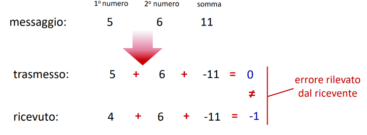
spiegazione in bit
- il mittente
- Interpretazione dati: Il contenuto del segmento (compresi header UDP e indirizzi IP) viene trattato come una sequenza di interi a 16 bit.
- Calcolo checksum: Si fa la somma di questi interi (considerando inizialmente il campo checksum come 0) e si prende il complemento a 1 del risultato(inverso).
- Inserimento: Il valore ottenuto viene inserito nel campo checksum del segmento UDP.
- il ricevente
- Ricalcolo: Il ricevente ricalcola la checksum nello stesso modo, ma include anche il valore di checksum ricevuto.
- Verifica:
- Se il risultato sono tutti 1 (cioè 0 nel complemento a 1), significa nessun errore rilevato.
- Se il risultato è diverso, c’è stato un errore nella trasmissione.
- Alternative: Alcune implementazioni fanno una verifica ricalcolando la checksum (come fa il mittente) e la confrontano con il valore ricevuto.
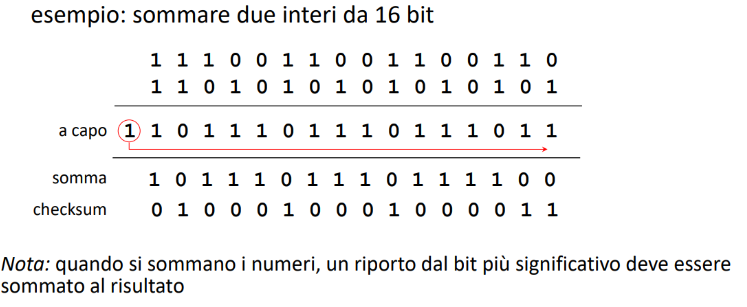 ricapitolando: se avremo tutti 1 allora coincide altrimenti c’è un errore
FOTO DI RIASSUNTO DI UDP
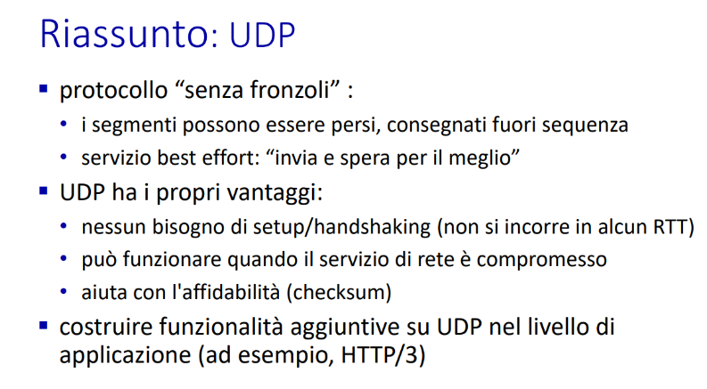
Problema di affidabilità nei trasferimenti di dati
si richiede un trasferimento affidabile che garantisca lo scambio di bit senza nessuna perdita o corruzioni e che arrivino nell'ordine corretto
Una mezza soluzione è con il protocollo TCP, un protocollo di trasporto molto affidabile che si appoggia al livello di rete tramite il protocollo IP(non affidabile, spedisce e basta), infatti il protocollo TCP deve controllare quello IP per non fargli fare stupidaggini
Modi diversi per rendere un collegamento affidabile
Nella foto qui sotto possiamo vedere come il canale fin dal principio è affidabile ma difficile da realizzare (pura fibra da una parte all’altra in purezza) 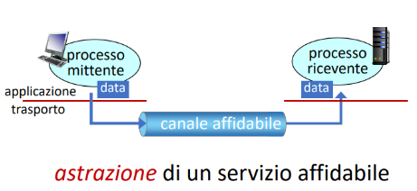
qui invece abbiamo un canale che è inaffidabile ma che attraverso il protocollo di trasferimento abbiamo dei risultati affidabili 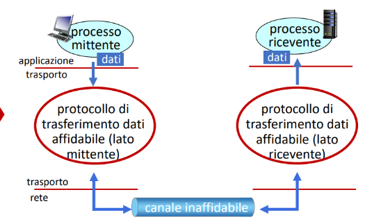
Ci tengo a precisare che di solito il mittente non sa lo stato del destinatario e il destinatario non sa quello del mittente TCP cerca di dedurre lo stato del destinatario tramite:
- Acknowledgment (ACK)
- Timeout
- Controllo di congestione
Un concetto di affidabilità: RDT
RDT sta per Reliable Data Transfer ed è un concetto o modello a scopo teorico che viene applicato da diversi protocolli come quello TCP per effettuare connessioni affidabili 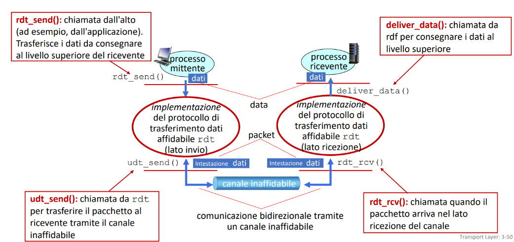 Descrizione dell’immagine:
- il canale è inaffidabile ma bidirezionale mittente:
- abbiamo il mittente che si serve di rdt_send() ad alto livello
- incapsula i dati e li passa alla funzione sottostante
- poi si serve di udt_send() a basso livello
- invio del pacchetto sul canale inaffidabile ricevente:
- il ricevente si serve di rdt_rcv() a basso livello
- controlla se il pacchetto è arrivato integro
- poi deliver_data() per ricevere i dati da rdt_rcv al processo ricevente(in alto)
Diverse versioni
come sempre ci sono diverse versioni che migliorano di volta in volta e variano Esse vengono spiegate attraverso gli stati finiti
- un sistema che spiega i passaggi in modo chiaro
RDT 1.0
Il canale è completamente affidabile quindi non abbiamo alcun problema 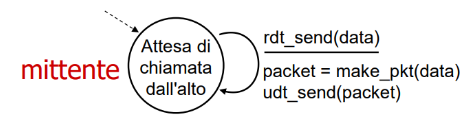
- attende una chiamata dal processo con i dati da inviare
- il processo chiama rdt_send(data)
- il protocollo crea il pacchetto con i dati
- lo invia a udt_send(packet)
- ritorna in attesa 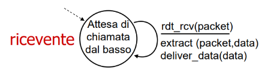
- attende il pacchetto dal canale di trasporto
- una volta fatto esso viene chiamato attraverso rdt_rcv(packet)
- estrae il pacchetto e lo invia a deliver_data(data)
- ritorna in attesa
RDT 2.0
In questo modello invece assumiamo che esso abbia un canale non affidabile ma comunque i bit vengono inviati con l’ordine corretto, possono solo corrompersi inoltre si applica il concetto degli acknowledgements
- se un pacchetto non rispetta il checksum viene chiesto di ripetersi(NACK’S)
- se lo rispetta vien inviato un OK (ACK’S) e di conseguenza avviene uno stop and wait
I protocolli ARQ sono quei protocolli dove il pacchetto viene ritrasmesso in caso di errori 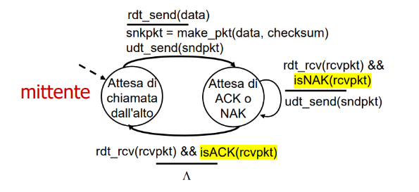
- abbiamo una attesa di chiamata dall’alto con la stessa prerogativa
- dopo aver inviato il pacchetto incapsulato
- attende ACK o NAK
- se è true torna allo stato iniziale
- sennò ritrasmette l’ultimo pacchetto Il simbolo indica non inviare nessuna funzione se si è verificata la condizione 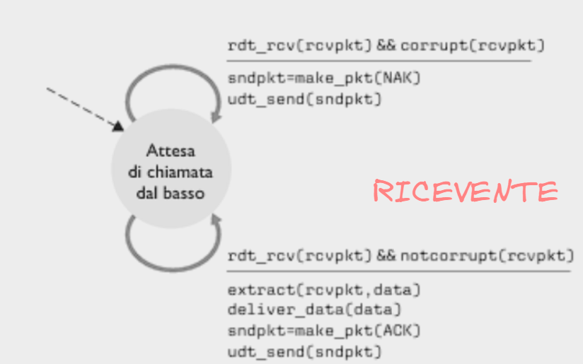
- abbiamo un solo stato di attesa
- quando riceve i pacchetti e sono corrotti invia un NACK e torna ad attendere
- quando riceve i pacchetti e non sono corrotti invia un ACK e torna ad attendere
Cosa succede se ACK o NACK sono corrotti
abbiamo 3 possibilità:
- uno dei due può dire di non aver capito il segnale di ACK o NACK e quindi esso viene rimandato, se non viene capito n volte si crea una sorta di loop dove uno dice di ripetere e l’altro dice di ripetere ecc…
- Vengono aggiunti dei bit di checksum per recuperare i bit
- che sia un ACK o NACK inalterato il pacchetto viene comunque reinviato per sicurezza(può causare duplicazione dei pacchetti)
Come risolvere la duplicazione(numero di sequenza)
per risolverla si aggiunge un nuovo campo dati che numera il pacchetto in modo da identificarlo così il destinatario sa se il pacchetto è uguale a un altro e può eliminarlo
RDT 2.1
Come il 2.0 ma introduce il numero di sequenza 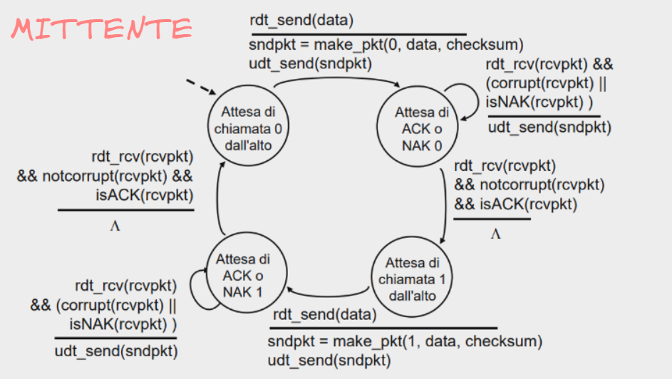 ha 4 stati che comprendono l’aggunta dei numeri di sequenza e dei vari stati
- si attende la chiamata dall’alto di tipo 0, viene creato il pacchetto ecc…
- si attende ACK O NACK di tipo 0
- se è corrotto si va in attesa di tipo 1
- si passa al tipo 1 di ACK o NACK
- si torna in caso alla attesa di tipo 0
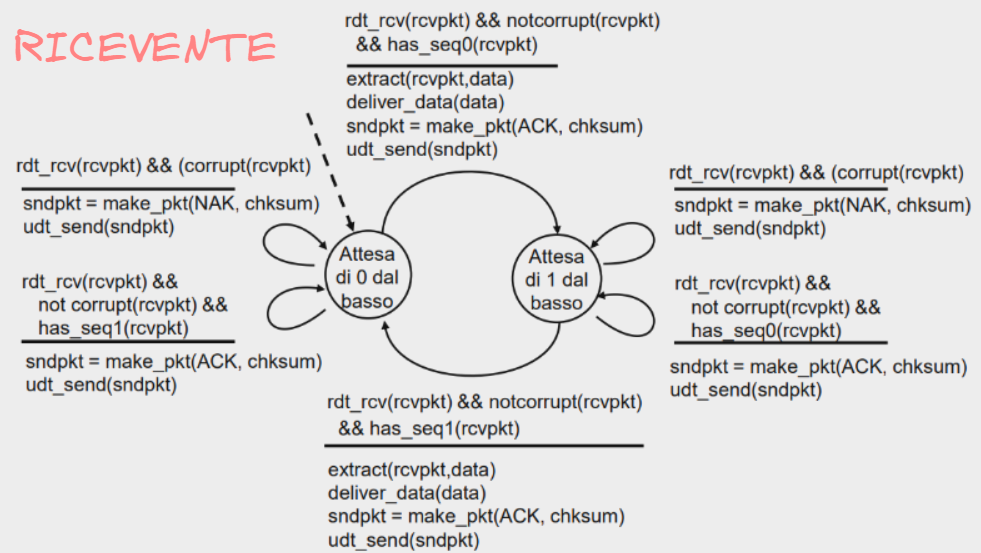 il ricevente anche ha due numeri di sequenza 0 o 1 la cosa che succede è la stessa ma dipende con quale sequenza siamo
- se arriva un pacchetto non corrotto ma siamo con seq=1 allora significa che esso è un duplicato e bisogna inviare ACK ignorando il pacchetto ricevuto
RDT 2.2
versione migliorata del 2.1 senza il NACK ACK viene usato con un numero di sequenza se il numero non corrisponde è successo qualcosa di sbagliato Esempio:
- Il mittente invia pacchetto con seq=0;
- Il ricevente riceve il pacchetto ma è corrotto, non manda NAK ma ripete l’ultimo ACK valido (es. ACK 1)
- Il mittente riceve ACK 1 e capisce che l’ultimo pacchetto a seq=0 non andava bene e ritrasmette. Cambia qualcosa nella logica del mittente sono quasi uguali. 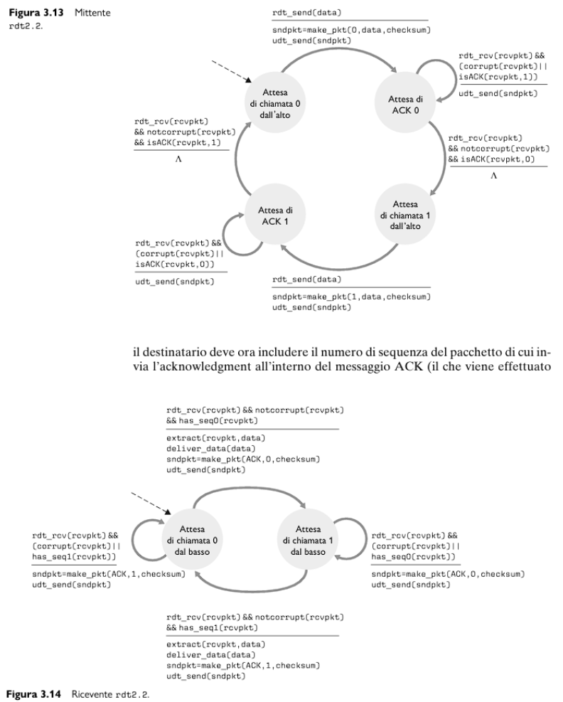
RDT 3.0
RDT 3.0 è una versione del protocollo Reliable Data Transfer progettata per funzionare anche quando i pacchetti o ACK possono essere persi, non solo corrotti. Questa gestione è demandata al mittente che dovrà ritrasmetterli Cosa succede in RDT 3.0?
- Il mittente invia un pacchetto dati al destinatario.
- Il pacchetto può:
- Arrivare correttamente ➡️ il destinatario invia un ACK
- Essere perso
- Arrivare, ma l’ACK va perso
- In entrambi gli ultimi due casi, il mittente non riceve alcuna risposta. il mittente può capire che c’è stato un problema se dopo un tot di tempo (timeout) non riceve un ACK
quanto deve essere il tempo?
Questo tempo è generalmente almeno
- il ritardo di andata e ritorno tra mit e dest+il tempo di elaborazione.
Ma il ritardo (RTT) può cambiare molto (a seconda della rete, del traffico, ecc.). Quindi
- Il timeout viene stimato in modo approssimativo
- Se scade senza ricevere risposta, si suppone che il pacchetto sia andato perso
Osservazione importante: La ritrasmissione è la soluzione che viene posta a qualunque tipo di perdita in questo protocollo.
Quindi per implementare questo meccanismo usiamo un countdown timer. Il mittente dovrà:
- inizializzare il contatore ogni volta che invia un pacchetto
- rispondere con una azione appropriata in base al risultato del contatore
- fermare il contatore se tutto fila liscio 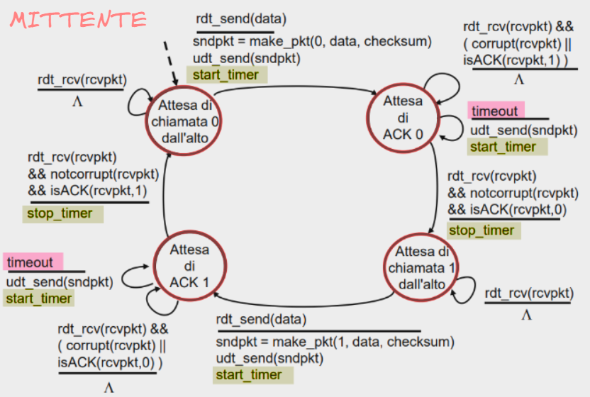
- si può notare come viene gestito anche il timer stavolta Il ricevente è lo stesso di RDT 2.1
Carrellata di esempi
Esempio dove è tutto ok
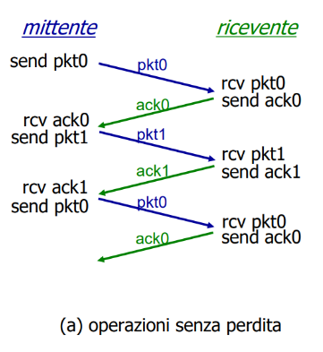
Esempio dove abbiamo una perdita di un pacchetto
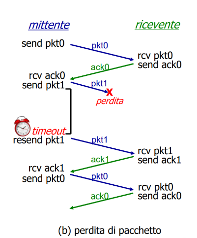
- ptk1 viene perso
- il tempo scade
- viene reinviato pkt1
Esempio dove abbiamo una perdita di un ACK
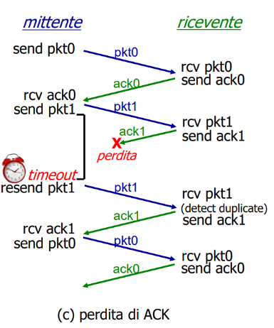
- perdita di ack1
- timeout scade
- reinvio di pkt1
- ack1 inviato correttamente
Esempio dove abbiamo un timeout che termina troppo presto
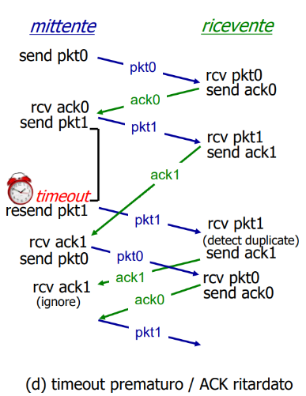
- il mittente invia due volte lo stesso pacchetto perché il timeout non da tempo al ricevente di inviare ack
Uso di protocolli per il trasferimento dati affidabile senza pipeline
anche il 3.0 è stop and wait quindi molto inefficiente 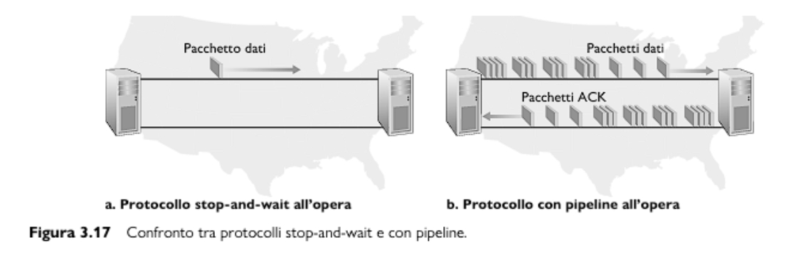
una serie di calcoli per capire l’inefficienza dello stop and wait
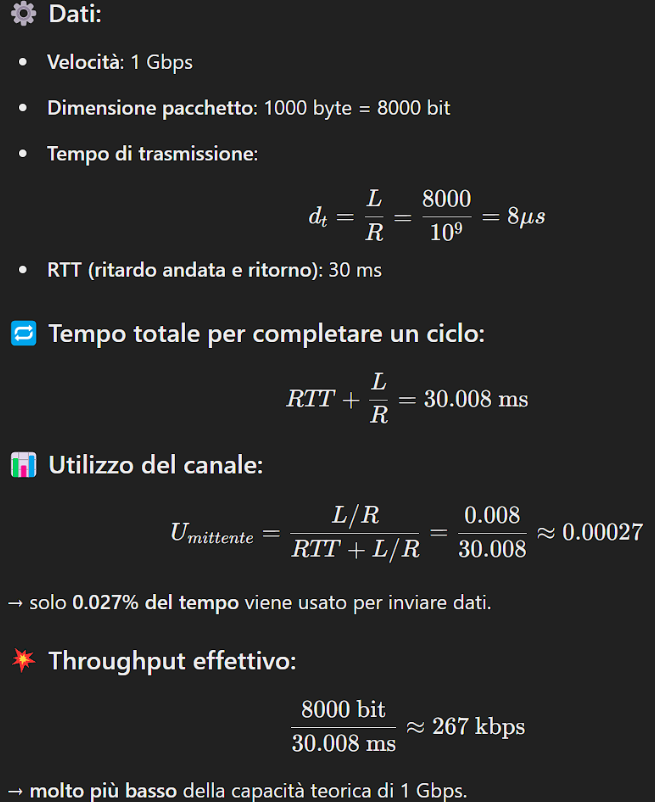 1000 byte vengono trasferiti in con un troughput di , ma abbiamo 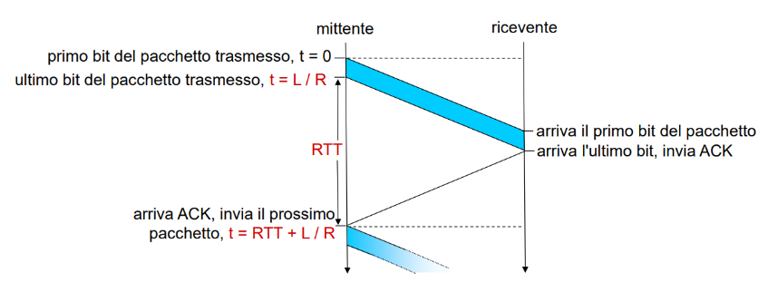
Uso di protocolli per il trasferimento dati affidabile con pipeline
usare il pipelining consente di migliorare decisamente le cose
Il mittente potrà inviare più pacchetti di fila senza attendere i vari ACK’s
- ogni pacchetto ha un univoco, quindi usa più numeri
- sia mittente che ricevente devono avere un Buffer
- il mittente tiene i pacchetti nel buffer finché non arrivano ACK’s
- dopo li può eliminare
- al ricevente potrebbe servire un buffer
- si usano protocolli Go-Back-N e selective repeat per gestire questo sistema(ora spiego bene) 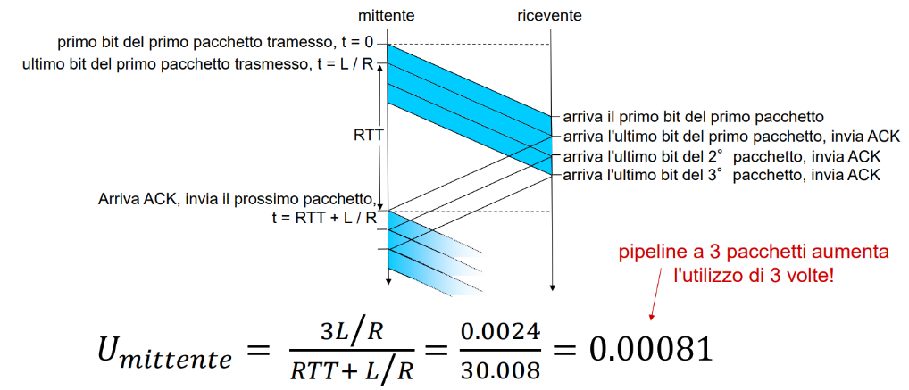 = Utilizzazione del mittente
- il mittente tiene i pacchetti nel buffer finché non arrivano ACK’s
Spiegazione approfondita di GBN
È un protocollo di trasmissione affidabile con pipeline, il mittente può inviare quanti pacchetti vuole senza attendere ACK’s ma può inviare un tot numero di essi prima di dover attendere per forza uno o più ACK’s 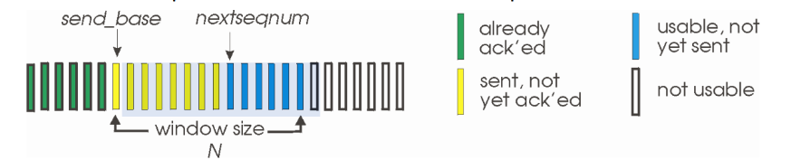
- la base è il numero di sequenza del pacchetto più vecchio che non ha ancora ricevuto ACK’S
- i nextseq invece sono quei numeri di sequenza non ancora utilizzati(per inviare altri dati) Ci sono 4 intervalli di numeri:
| Intervallo | Descrizione | Colore (nella figura) | Stato dei pacchetti |
|---|---|---|---|
| [0,base−1] | Pacchetti già trasmessi e già confermati (ACK ricevuto) | 🟩 Verde | Confermati, possono essere eliminati dal buffer |
| [base,nextseqnum−1] | Pacchetti già inviati ma non ancora confermati | 🟨 Giallo | In attesa di ACK, devono rimanere nel buffer |
| [nextseqnum,base+N−1] | Pacchetti non ancora inviati, ma inviabili subito | 🔵 | Pronti per l’invio, se serve |
| ≥ base + N | Numeri di sequenza non utilizzabili finché il pacchetto con seq = base non è confermato | ⚪ | Bloccati, in attesa di liberare spazio nella finestra |
| Questo protocollo viene detto a finestra scorrevole perché i pacchetti non ancora riconosciuti (senza ACK’S) sono detti finestre |
- appena avviene l’ACK esse vengono incrementate creando uno scorrimento 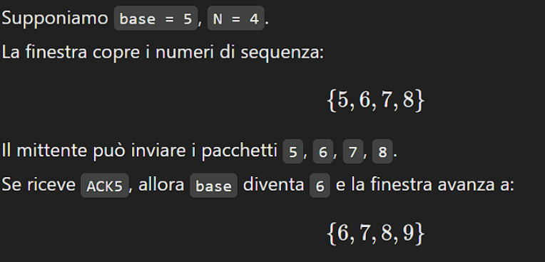 quindi se poniamo una base tipo 5 un numero compreso tra 0 e 5-1 è già confermato e così via per gli altri…
Le finestre in numeri…
- Con un campo di k bit i numeri di sequenza possibili vanno da 0 a 2k-1
- Dopo questo valore si torna a 0
- Tutte le operazioni sui numeri di sequenza devono essere fatte modulo di 2k
Praticamente se il numero di bit fisso è 3 posso rappresentare al massimo i numeri fino a 7 dopodiché riparto
Operazioni modulo
Tutte le operazioni aritmetiche sui numeri di sequenza (ad esempio: confronto, differenza, somma) vanno fatte modulo 2k2^k2k.
Questo serve a gestire correttamente il ciclo di ritorno a zero.
Ad esempio: se hai inviato pacchetto 7 e il prossimo è 0,
allora nextseqnum = (7 + 1) mod 8 = 0
Altro esempio
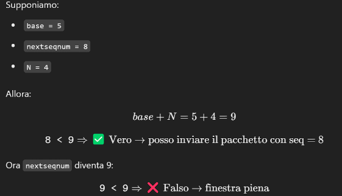
FSM del mittente
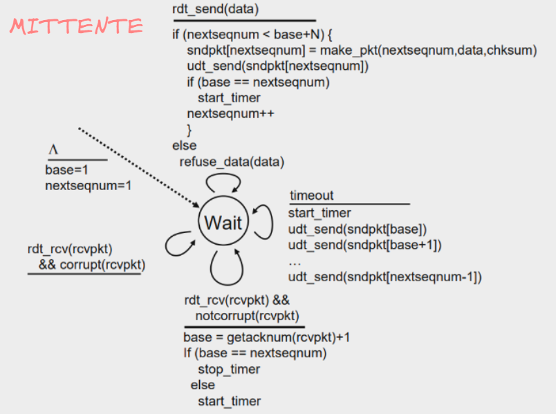
- rdt_send(data) è la chiamata che invia il pacchetto se viene chiamato dall’applicazione sopra
- il mittente verifica se può inviare con
if(nextseqnum<base+N) - costruisce il pacchetto con make
- lo invia con
udt_send - controlla se è il primo pacchetto della finestra
- in caso avvia il timer
- incrementa il prossimo numero seq per la prossima finestra
- refuse data se non può essere inviato altro( è tutto pieno) 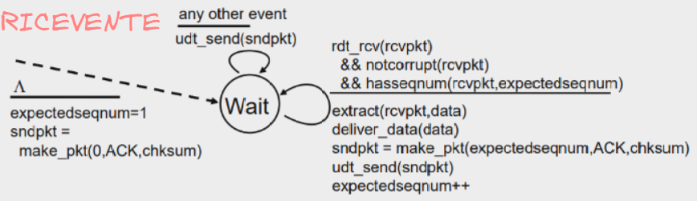 Deve garantire che i pacchetti vengano consegnati in ordine
- il mittente verifica se può inviare con
- il pacchetto viene accettato se
- esso è del numero seq aspettato
- non è corrotto
- si invia un ACK e si passa a deliver_data questo sopra si chiama ACK cumulativo perché conferma l’arrivo di n-pacchetti
- non viene accettato se
- è fuori ordine ed è corrotto
- non memorizza nulla
- invia l’ultimo ACK fino al pacchetto valido
ESEMPIO
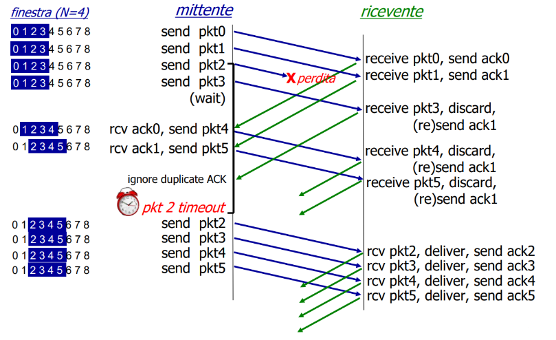
- il mittente invia i vari pacchetti
- il ricevente riceve i pacchetti e invia i vari ACK-n
- pkt2 non viene preso
- vengono inviati pkt3,4,5
- il ricevente li scarta perché gli manca 2
- timeout
- il mittente rimanda tutti i pacchetti
- ack-n vari fino a 5
Concetto di ripetizione selettiva
GBN funziona ma ha diverse limitazioni, se un pacchetto viene perso vengono ritrasmessi tutti quelli dopo quel pacchetto compreso anch’esso ovviamente
I protocolli a ripetizione selettiva evitano le ritrasmissioni non necessarie facendo ritrasmettere al mittente solo quei pacchetti per cui non si è ricevuto ACK valido.
Il destinatario SR invia un ACK per i pacchetti correttamente ricevuti sia in ordine che fuori sequenza. Questi vengono memorizzati in un buffer finché non sono stati ricevuti tutti i pacchetti mancanti (che di conseguenza hanno nseq più basso).
MITTENTE
Gestisce una finestra di invio con ampiezza N, questi pacchetti possono essere di vari tipi scritti nelle immagini 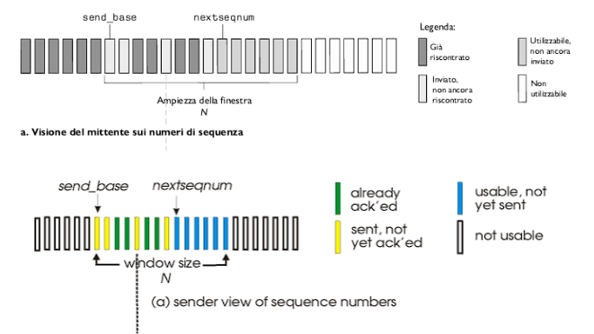
RICEVENTE
Anche il destinatario possiede una finestra di ricezione di ampiezza N, il che significa che può accettare e memorizzare al massimo N pacchetti con numeri di sequenza consecutivi, anche se arrivano fuori ordine.
Questi pacchetti possono trovarsi in diversi stati:
-
Ricevuti ma fuori ordine, memorizzati nel buffer (grigio scuro);
-
Attesi ma non ancora ricevuti (grigio chiaro);
-
Fuori dalla finestra, quindi non utilizzabili (bianco).
Il destinatario utilizza come riferimento la variabile rcv_base, che rappresenta il primo numero di sequenza atteso.
Quando il pacchetto con numero rcv_base arriva, la finestra può avanzare e vengono consegnati tutti i pacchetti consecutivi già presenti nel buffer.
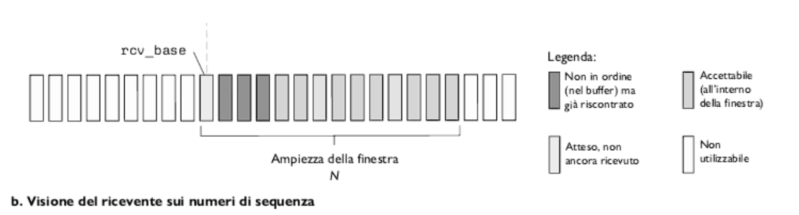
tra i due vi è una sorta di asimmetria
Il mittente e il destinatario non condividono la stessa visione dei pacchetti, anche se usano finestre della stessa ampiezza.
Le loro finestre si muovono in momenti diversi e in base a eventi diversi.📤 Mittente:
Invia pacchetti trasend_baseenextseqnum - 1, ma può avanzare la finestra solo quando riceve l’ACK disend_base.
Anche se arrivano ACK per pacchetti successivi, non si muove finché non arriva quello “giusto”.📥 Destinatario:
Attende il pacchettorcv_base.
Può ricevere pacchetti fuori ordine e metterli nel buffer, ma non consegna nulla né fa avanzare la finestra finché non arriva propriorcv_base.
🎯 In breve:
Il mittente si muove con gli ACK (e solo quando arriva quello alla base).
Il destinatario si muove con i pacchetti ricevuti, ma solo quando riceve quello che si aspetta per primo.
➡️ Le finestre si aggiornano in modo indipendente.
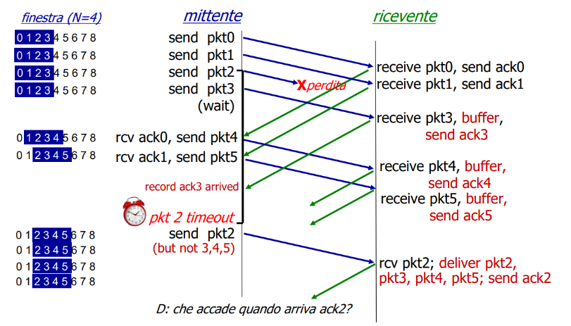 📌 Contesto generale
La finestra ha ampiezza N = 4.
Il protocollo è Selective Repeat, perché:
- Il mittente ritrasmette solo pkt2 (non tutto)
- Il destinatario accetta e bufferizza pacchetti fuori ordine
📤 Lato mittente:
- Invia
pkt0,pkt1,pkt2,pkt3
➡️ La finestra è piena (ha raggiuntoN = 4), quindi attende ACK per poter inviare altro. - Riceve
ACK0→ la finestra avanza, inviapkt4 - Riceve
ACK1→ avanza ancora, inviapkt5 - Il
pkt2era andato perso → timeout → viene ritrasmesso - Riceve
ACK3→ ma non può avanzare la finestra, perché manca ancoraACK2(il pacchetto alla base).
📥 Lato destinatario:
- Riceve
pkt0→ lo consegna, inviaACK0 - Riceve
pkt1→ lo consegna, inviaACK1 - Non riceve
pkt2(si perde) - Riceve
pkt3,pkt4,pkt5→ sono fuori ordine, quindi:- Vengono messi nel buffer
- Invia comunque i rispettivi ACK (ACK3, ACK4, ACK5)
- Riceve la ritrasmissione di
pkt2:- Ora ha i pacchetti
2, 3, 4, 5→ tutti consecutivi - Li consegna in ordine
- Invia
ACK2
- Ora ha i pacchetti
🔁 Differenza con Go-Back-N:
Nel Selective Repeat:
- Il mittente ritrasmette solo i pacchetti mancanti (pkt2)
- Il destinatario memorizza i pacchetti arrivati fuori ordine e li consegna appena possibile Nel Go-Back-N, invece:
- Il mittente avrebbe ritrasmesso anche pkt3, pkt4, pkt5
- Il destinatario avrebbe scartato pkt3–5 finché non arrivava
pkt2
Ambiguità nel protocollo
quelli a dx delle foto sotto sono gli ACK’S
📌 Caso (a): tutto ok
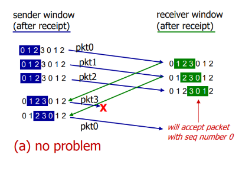 Hai 4 numeri di sequenza possibili (0, 1, 2, 3) e una finestra di dimensione N = 3. In Selective Repeat:
- Ogni pacchetto ha un numero di sequenza.
- Poiché lo spazio è limitato (4 in questo caso), i numeri vengono riutilizzati ciclicamente.
▶️ Scenario:
- Il mittente invia i pacchetti con numeri 0, 1, 2.
- Il destinatario li riceve correttamente e invia
ACK0,ACK1,ACK2. - La finestra del destinatario avanza e ora accetta i pacchetti con numeri
3, 0, 1→ tutto funziona come previsto.
❗ Caso (b): errore dovuto alla perdita degli ACK
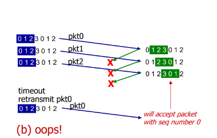 ▶️ Cosa succede:
- Gli ACK inviati dal destinatario vanno persi, quindi il mittente non fa avanzare la sua finestra.
- Scatta il timeout → il mittente ritrasmette pkt0 (che pensa non sia mai arrivato).
- Ma il destinatario aveva già ricevuto e confermato quel pkt0, e ha già avanzato la finestra.
❌ Problema:
Il destinatario riceve di nuovo un pacchetto con numero di sequenza 0,
ma non può sapere se è un duplicato vecchio o un nuovo pacchetto! Questo accade perché: - Il numero di sequenza è riciclato (sempre 0)
- Il mittente e il destinatario non sono più sincronizzati
- Non c’è abbastanza spazio numerico per distinguere pacchetti vecchi da nuovi
Per scegliere la giusta grandezza delle finestre
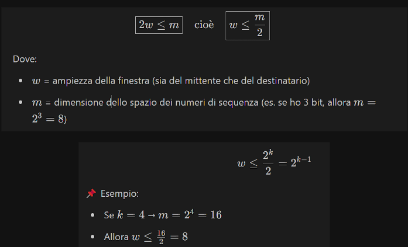 La finestra deve essere al massimo metà dello spazio dei numeri di sequenza.
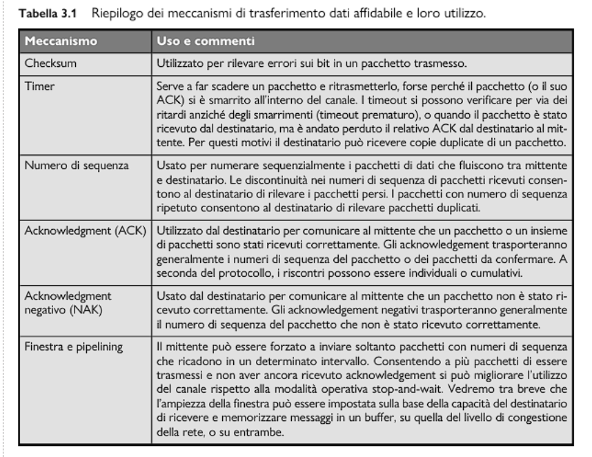